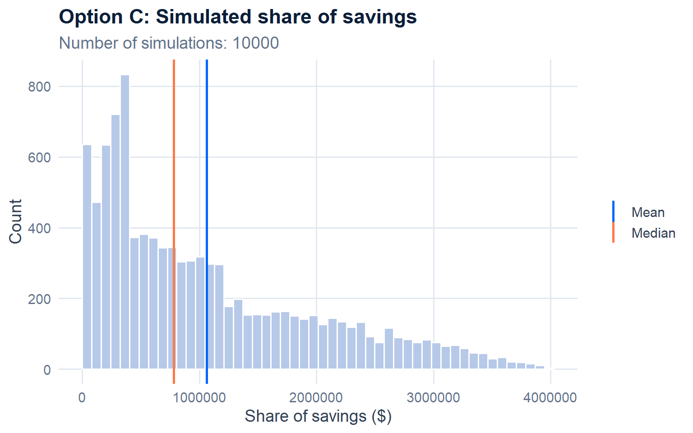
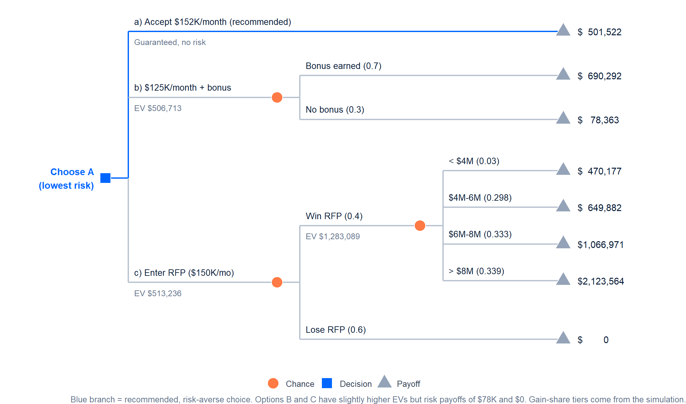
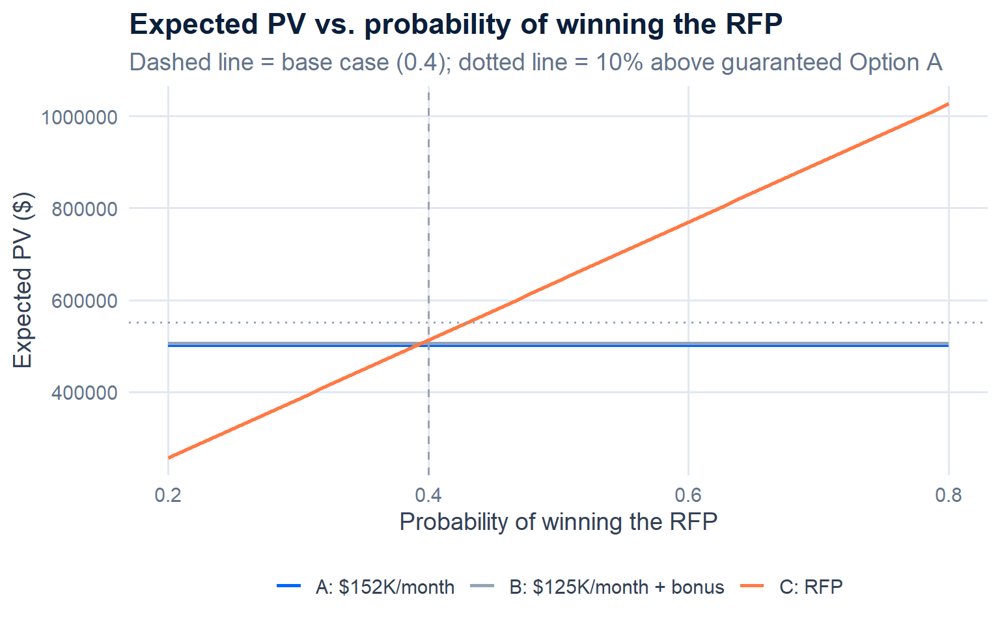
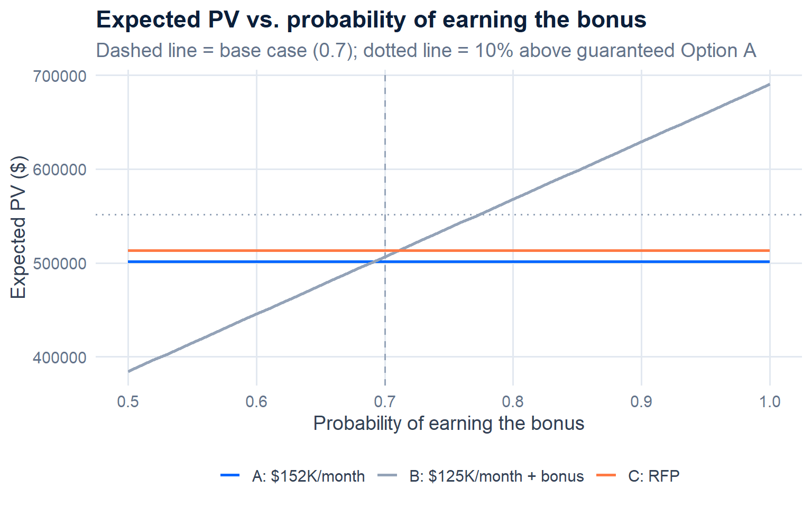

AstraSync’s client rejected a proposed price of $160,000 per month for an 18-month AI/ML implementation that costs AstraSync $120,000 per month to deliver, and offered two alternatives: a flat $152,000 per month (Option A) or $125,000 per month plus an $800,000 success bonus (Option B); if AstraSync declines both, the client will run an RFP (Option C) where AstraSync would bid $150,000 per month plus a gain-share of the client’s savings, with a 40% chance of winning. I compared the expected present value of AstraSync’s contribution under each option at a 1.5% monthly discount rate, using a decision tree and a 10,000-run Monte Carlo simulation of client savings to value the gain-share. The three options are nearly tied on expected value (Option C $513,236, Option B $506,713, Option A $501,522), but they differ sharply in risk: Option B has a 30% chance of paying only $78,363, and Option C has a 60% chance of paying nothing. I recommend that AstraSync accept Option A, the most risk-averse choice, because it guarantees $501,522 while giving up less than 3% of expected value. Sensitivity analysis shows that B or C would only become worth their risk if AstraSync had stronger odds of earning the bonus or winning the RFP than it currently estimates.
RECOMMENDED: Option A, accept $152K/month
$501,522
Option B: $125K/month + $800K bonus
$506,713
Option C: enter the RFP
$513,236
The client pays $152,000 at the end of each month for 18 months. After the $120,000 monthly cost (1,200 hours at $100), AstraSync keeps $32,000 per month.
The monthly contribution falls to $5,000 (PV $78,363), but an $800,000 bonus is paid at the end of month 18 if the implementation beats the client’s benchmark (probability 0.7).
AstraSync bids $150,000 per month (a $30,000 monthly contribution, PV $470,177) and earns a gain-share at month 18 based on the client’s savings, which follow a triangular distribution (low $3.2M, most likely $5.6M, high $12.8M). AstraSync wins with probability 0.4.

| Option | Expected PV | Best case | Worst case | Chance of worst case | Gain over A |
|---|---|---|---|---|---|
| A: $152K/month | $501,522 | $ 501,522 | $501,522 | 0% (certain) | - |
| B: $125K/month + bonus | $506,713 | $ 690,292 | $ 78,363 | 30% | $5,191 |
| C: RFP at $150K/month | $513,236 | $2,123,564 | $ 0 | 60% (lose RFP) | $11,714 |



The two most important inputs are the probability of winning the RFP and the probability of earning the bonus: both are judgment calls, and they decide whether Option B or C is worth giving up Option A’s guaranteed $501,522.
I recommend that AstraSync accept Option A, the client’s offer of $152,000 per month, because it is the most risk-averse choice. It guarantees $501,522 in present value, while Option B ($506,713) and Option C ($513,236) add only $5,191 and $11,714 in expected value. Those small gains come with large downside: Option B has a 30% chance of paying only $78,363, its $5,000 monthly margin leaves no room for cost overruns, and the bonus depends on a benchmark the client sets; Option C has a 60% chance of paying nothing and would open an existing client to competitors.
The sensitivity analysis shows that the riskier options are not without value. Both leads sit right at their break-even points today, but if AstraSync had stronger evidence of success, with a bonus probability of at least 0.77 or an RFP win probability of at least 0.43, Option B or C would offer enough extra value (10% or more above A) to justify the risk.
All three options fall below the original proposal’s $626,902, so AstraSync gives up between $113,667 and $125,380 in present value whichever it chooses.
Recommended next steps: